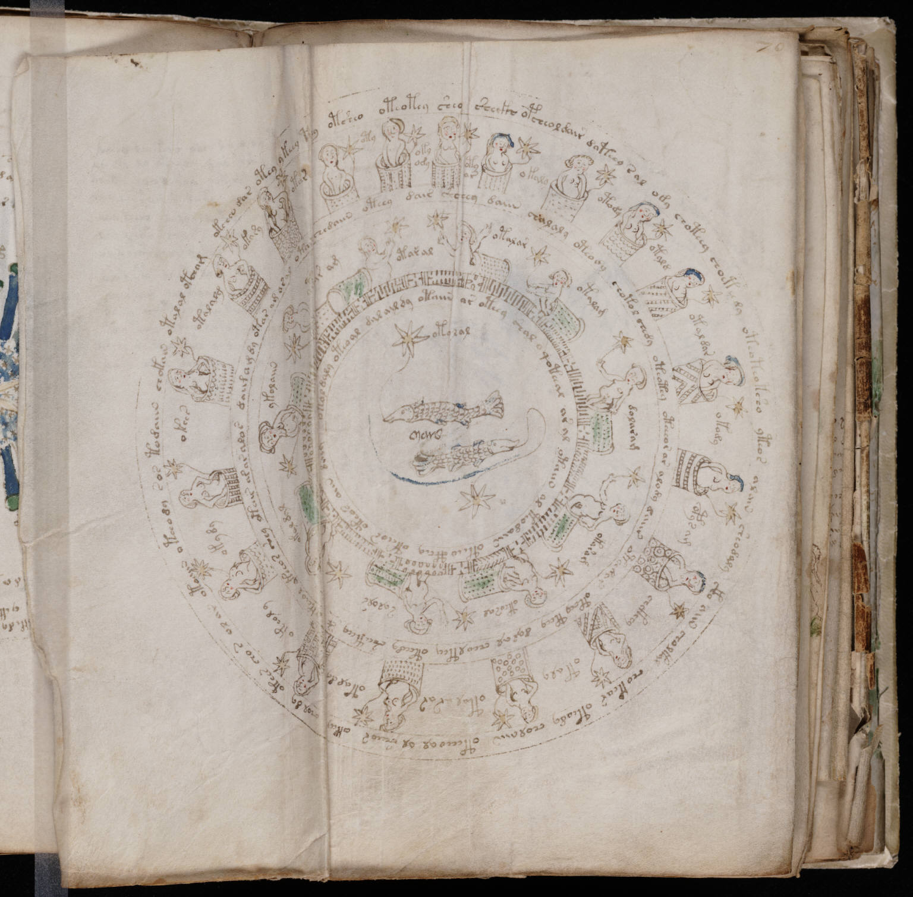

f70v2
1okcheo dar otey ykeey tchy otsheo oteotey shey sheckh opcheol dair dateey sal ody choteey choeteedy oteoteotsho yteos alain sheodaly ckho aiin cholkal chotear oteody cholaiin oteeeo al ol sheeor okey chol dy otees cho r ol ar otoaiin oteeody sos todaiin chokain otalal otcham 2oty3oky ody4oty or5okaly6otody7otald8otal dar9okody10opys am11chckhhy12otaly13otal rar14otal dy15okeoly16okydy17okees18otalalg19okasy20otar21chedaiin otchy dair shchey daiin chalaly oteody chotol chedy oteatey otcheor ar alody daiir oteedar otchy tchy dal al cheoltey oteedy sheeteey sh*s keeol ykeeos shey okear ar ar alos daimdy otar am ar al otard22otaral23otalar24otalam25dolaram26okaram27oteosal28salols29okaldal30ykolaiin31sar am32otal dlay oteoal dal aildy otaiir ar oteey shal o qoteeal ar al otaiin al teodaiin oteeo cthey otchos oteos aiin d*iy 33otylal
